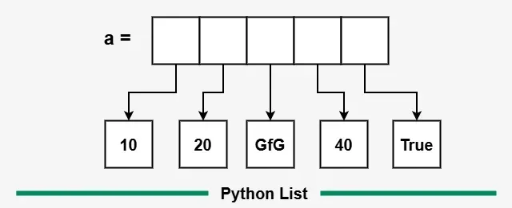

UT3: Tipos de datos complejos¶
Introducción¶
Bienvenid@s a la Unidad de Trabajo 3 (UT3) del módulo profesional optativo (MPO) de Python. En esta unidad, nos centraremos en los tipos de datos complejos, que son fundamentales para el desarrollo de programas en Python. Aprenderás a utilizar listas, diccionarios y tuplas para almacenar y manipular datos de manera eficiente.
Tipos de datos complejos¶
Los tipos de datos complejos son estructuras que permiten almacenar múltiples valores en una sola variable. En Python, los tipos de datos complejos más comunes son las listas, los diccionarios y las tuplas. Cada uno de estos tipos tiene sus propias características y usos.
Listas¶
Las listas son colecciones ordenadas y mutables de elementos. Puedes almacenar diferentes tipos de datos en una lista, incluyendo números, cadenas y otros objetos. Las listas se definen utilizando corchetes [] y los elementos se separan por comas.
mi_lista = [1, 2, 3, "Hola", True]
Si te fijas en el ejemplo anterior, mi_lista contiene cinco elementos: tres números enteros (1, 2, 3), una cadena de texto ("Hola") y un valor booleano (True). Las listas pueden contener elementos de diferentes tipos, lo que las hace muy versátiles.
Antes de entrar en las operaciones que se pueden realizar con listas, es importante entender cómo se almacenan los elementos en ellas. Cada elemento de una lista tiene un índice asociado, que comienza en 0. Por ejemplo, en la lista mi_lista anterior, el primer elemento (1) tiene un índice de 0, el segundo elemento (2) tiene un índice de 1, y así sucesivamente.

Internamente, Python almacena las listas como una secuencia de referencias a los objetos que contienen. Esto significa que cuando creas una lista, Python no copia los objetos en la lista, sino que almacena referencias a ellos. Esto es importante tenerlo en cuenta, ya que puede afectar el rendimiento y el comportamiento de tu programa.
Puedes acceder a los elementos de una lista utilizando su índice. Por ejemplo, para acceder al primer elemento de mi_lista, puedes usar:
print(mi_lista[0]) # Imprime: 1
También puedes acceder a los elementos desde el final de la lista utilizando índices negativos. Por ejemplo, mi_lista[-1] te dará el último elemento de la lista.
print(mi_lista[-1]) # Imprime: True
Para declarar una lista vacía, puedes usar:
mi_lista_vacia = []
O también puedes usar la función list():
mi_lista_vacia = list()
Operaciones con listas¶
Las listas permiten realizar operaciones como agregar, eliminar y modificar elementos. Algunas de las operaciones más comunes son:
append(): Agrega un elemento al final de la lista.insert(): Inserta un elemento en una posición específica de la lista.remove(): Elimina el primer elemento con el valor especificado.pop(): Elimina y devuelve el último elemento de la lista (o el elemento en la posición especificada).sort(): Ordena los elementos de la lista en orden ascendente.reverse(): Invierte el orden de los elementos en la lista.len(): Devuelve la longitud de la lista (número de elementos).
Otras características de las listas¶
Las listas también tienen otras características interesantes, como la posibilidad de anidar listas dentro de otras listas (listas multidimensionales) y la capacidad de utilizar comprensiones de listas para crear nuevas listas de manera concisa.
Este tipo de estructuras las denominamos listas anidadas. Por ejemplo:
mi_lista_anidada = [[1, 2, 3], ["Hola", "Mundo"], [True, False]]
En este caso, mi_lista_anidada contiene tres listas, cada una con diferentes tipos de datos. Puedes acceder a los elementos de las listas anidadas utilizando múltiples índices:
print(mi_lista_anidada[0][1]) # Imprime: 2
print(mi_lista_anidada[1][0]) # Imprime: Hola
Diccionarios¶
Un diccionario es una estructura de datos en Python que almacena pares clave-valor. Cada clave es única y se utiliza para acceder a su valor asociado.
persona = {
"nombre": "Ana",
"edad": 30,
"ciudad": "Valencia"
}
Características principales¶
- Las claves deben ser de tipo inmutable (strings, números, tuplas...).
- Los valores pueden ser de cualquier tipo.
- Los elementos no están ordenados (hasta Python 3.6 era completamente desordenado; desde Python 3.7 mantiene el orden de inserción).
- Se pueden anidar diccionarios dentro de otros diccionarios.
Operaciones básicas¶
Crear un diccionario¶
Para crear un diccionario, puedes usar llaves {} o la función dict():
mi_dic = {} # Diccionario vacío
mi_dic = dict(nombre="Luis", edad=25)
Acceder a valores¶
El acceso a los valores se realiza mediante la clave, es parecido a acceder a un elemento de una lista, pero en lugar de usar un índice, usas una clave:
print(persona["nombre"]) # Ana
Ten en cuenta que se lanza un error si la clave no existe.
Es recomendable usar el método .get() para evitar errores:
print(persona.get("apellido", "No especificado"))
En este caso, si la clave "apellido" no existe, se devuelve "No especificado" en lugar de lanzar un error.
Modificar valores¶
Para modificar un valor en un diccionario, simplemente asignas un nuevo valor a la clave correspondiente:
persona["edad"] = 31
Añadir nuevos pares clave-valor¶
De manera similar, puedes añadir nuevos pares clave-valor, la sintaxis es la misma que para modificar, pero la diferencia es que si la clave no existe, se crea un nuevo par:
persona["profesión"] = "Ingeniera"
Eliminar elementos¶
Para eliminar un elemento de un diccionario, puedes usar el método pop() o la palabra clave del:
del persona["ciudad"]
persona.pop("edad")
Comprobar si una clave existe¶
Para comprobar si una clave existe en un diccionario, puedes usar el operador in:
if "nombre" in persona:
print("La clave existe")
Recorrer un diccionario¶
Para recorrer un diccionario, puedes usar un bucle for. Puedes iterar sobre las claves, los valores o ambos:
- Recorrer claves:
for clave in persona:
print(clave)
- Recorrer valores:
for valor in persona.values():
print(valor)
- Recorrer claves y valores:
for clave, valor in persona.items():
print(f"{clave}: {valor}")
Métodos útiles¶
| Método | Descripción |
|---|---|
get(clave) |
Devuelve el valor asociado a la clave |
keys() |
Devuelve una vista con las claves |
values() |
Devuelve una vista con los valores |
items() |
Devuelve pares (clave, valor) |
pop(clave) |
Elimina la clave y devuelve su valor |
update(dic2) |
Actualiza con los pares clave-valor de otro diccionario |
Diccionarios anidados¶
alumnos = {
"alumno1": {"nombre": "Juan", "nota": 7},
"alumno2": {"nombre": "Laura", "nota": 9}
}
Ejemplo práctico¶
inventario = {
"manzanas": 10,
"naranjas": 5,
"plátanos": 7
}
for fruta, cantidad in inventario.items():
print(f"Tengo {cantidad} {fruta}")
Tuplas¶
Una tupla es una colección ordenada e inmutable de elementos. Una vez creada, no se puede modificar (ni añadir, ni eliminar, ni cambiar elementos).
mi_tupla = (1, 2, 3)
Características principales¶
- Las tuplas son inmutables.
- Pueden contener elementos de diferentes tipos.
- Permiten elementos duplicados.
- Son más eficientes en memoria que las listas.
- Se pueden desempaquetar fácilmente.
Crear tuplas¶
Una tupla se define utilizando paréntesis (). Puedes crear una tupla con uno o más elementos, y si es una tupla unitaria, debes incluir una coma al final para diferenciarla de un simple valor entre paréntesis.
tupla1 = (1, 2, 3)
tupla_unitaria = (5,) # Necesita la coma
tupla_vacia = tuple()
⚠️ Sin la coma,
(5)es solo un entero con paréntesis.
Acceder a elementos¶
Una tupla se comporta de manera similar a una lista en cuanto al acceso a sus elementos. Puedes acceder a los elementos utilizando índices, que comienzan en 0.
print(tupla1[0]) # Primer elemento
print(tupla1[-1]) # Último elemento
Recorrer una tupla¶
Así como con las listas, puedes recorrer los elementos de una tupla utilizando un bucle for:
- Recorriendo sus elementos, con un for each.
- Recorriendo sus índices, con un for range.
for elemento in tupla1:
print(elemento)
Operaciones comunes¶
| Operación | Ejemplo |
|---|---|
| Longitud | len(tupla1) |
| Concatenar | tupla1 + tupla2 |
| Repetir | tupla1 * 2 |
| Ver si contiene | 2 in tupla1 |
| Índice de elemento | tupla1.index('hola') |
| Contar elementos | tupla1.count('adios') |
Desempaquetado¶
Desempaquetar una tupla significa asignar sus elementos a variables individuales. Esto es útil cuando conoces la estructura de la tupla y quieres trabajar con sus valores de manera más directa.
persona = ("Ana", 30, "Valencia")
nombre, edad, ciudad = persona
print(nombre) # Ana
⚠️ El número de variables debe coincidir con los elementos de la tupla.
Tuplas anidadas¶
Las tuplas también pueden contener otras tuplas, lo que permite crear estructuras de datos más complejas. Esto es útil para representar datos relacionados de manera estructurada.
notas = (
("Juan", 7),
("Lucía", 8),
("Pedro", 6)
)
for nombre, nota in notas:
print(f"{nombre} sacó un {nota}")
¿Tupla o lista?¶
| Aspecto | Tupla | Lista |
|---|---|---|
| Mutabilidad | Inmutable | Mutable |
| Rendimiento | Más rápida y ligera | Más pesada |
| Uso común | Datos fijos o constantes | Datos que cambian |
| Sintaxis | Paréntesis () |
Corchetes [] |
Ejemplo práctico¶
coordenada = (39.4699, -0.3763)
def mostrar_ubicacion(coord):
lat, lon = coord
print(f"Latitud: {lat}, Longitud: {lon}")
mostrar_ubicacion(coordenada)
Ejercicios de clase: listas¶
Ejercicios de clase: diccionarios y tuplas¶
Para practicar lo aprendido en esta unidad, hemos preparado una serie de ejercicios que te ayudarán a consolidar tus conocimientos. Puedes encontrar los ejercicios en el siguiente enlace: